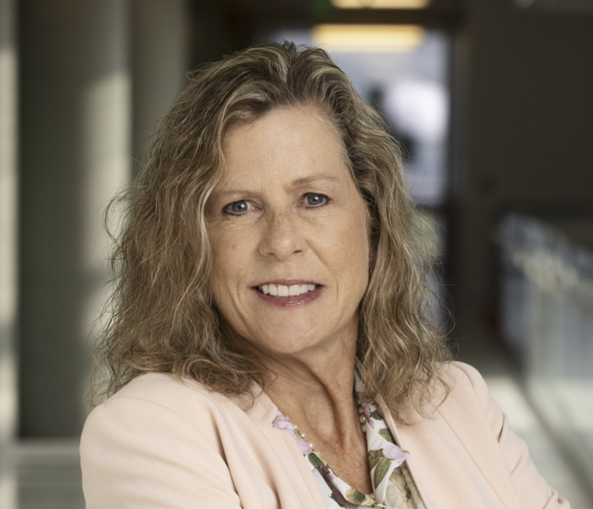
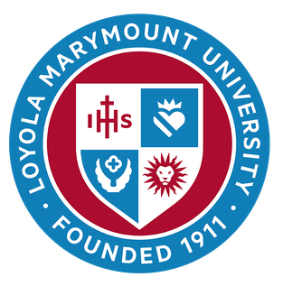
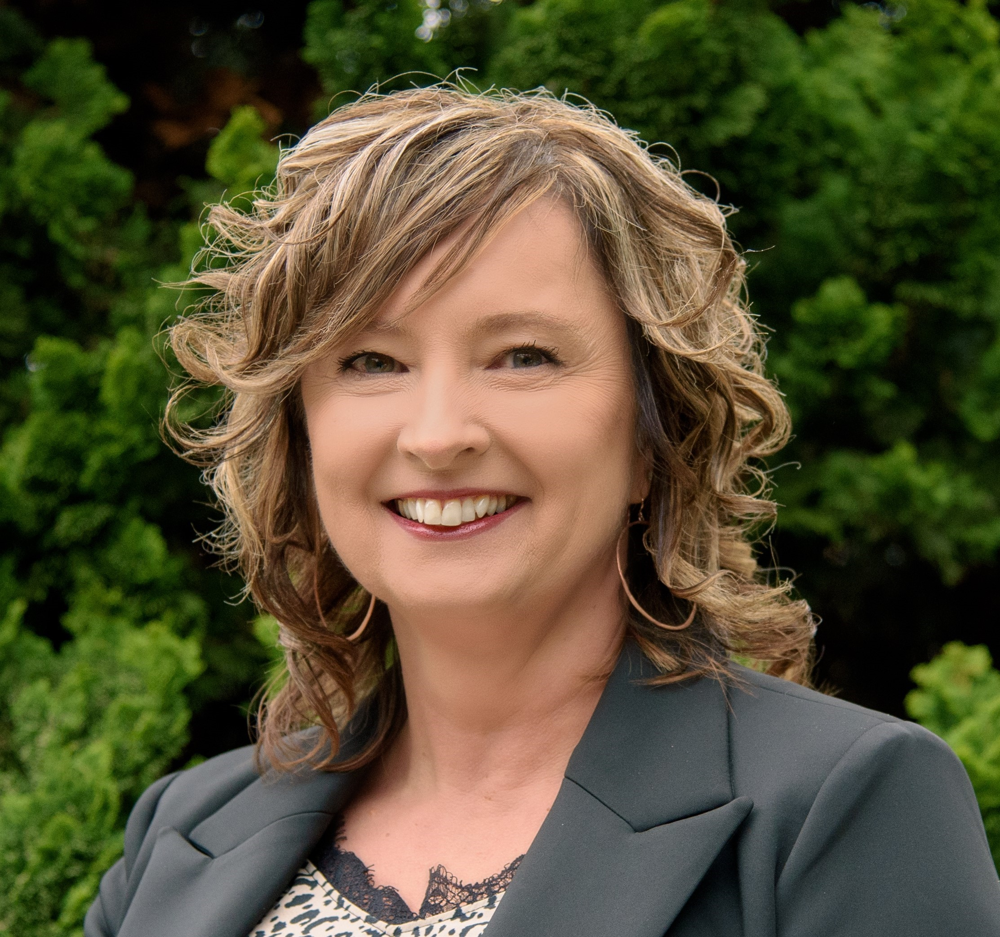
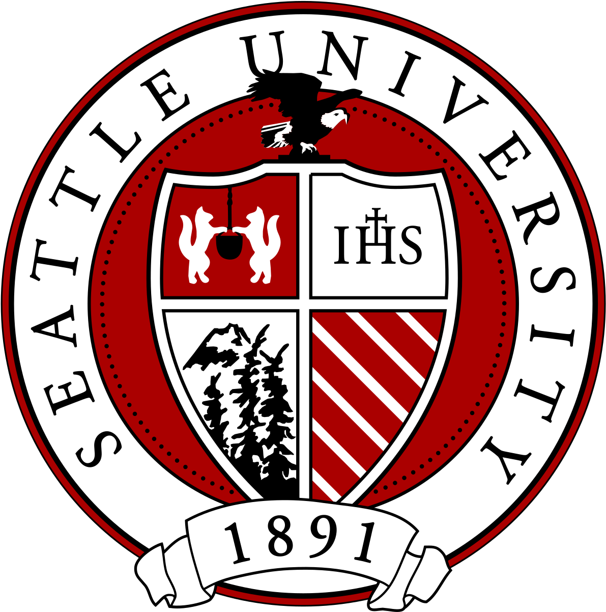

Partners & Supporters
i²mHubs is supported through funding from the National Science Foundation and developed in collaboration with the Electrical and Computer Engineering Department Heads Association (ECEDHA).
Supporting the exploration, preparation, and success of future engineering faculty.
i²mHubs is a mentoring ecosystem designed to help graduate students, postdoctoral scholars, and early-career faculty navigate academic career pathways with greater clarity, confidence, and community.
The i²mHubs initiative builds upon nearly a decade of work supporting aspiring engineering faculty.
In 2016, ECEDHA partnered with leaders in engineering education to launch iREDEFINE, an NSF-funded workshop focused on preparing doctoral students and postdoctoral scholars for academic careers.
Through years of participant feedback, it became clear that many future faculty members needed support much earlier in their career journey—before applying for faculty positions and even before deciding whether academia was the right fit.
To address this need, the i²mHubs initiative was developed as a multi-stage mentoring framework that supports participants from academic career exploration through the transition into faculty roles.
Today, i²mHubs combines online learning experiences, professional development workshops, mentoring networks, and faculty perspectives to help participants understand the diversity of academic careers and identify pathways that align with their interests, values, and goals.
i²mHubs builds upon nearly a decade of faculty mentoring and professional development through iREDEFINE while expanding support across the academic career pathway.
iREDEFINE Workshop launched to prepare graduate students and postdoctoral scholars for academic careers.
Continued support for participants through annual workshops and mentoring activities.
NSF-funded i²mHubs initiative begins with the goal of expanding mentoring beyond the workshop experience.
Development of the three-module framework and online learning experiences.
Launch of Module 1: Exploring Academic Career Pathways.
Expansion of mentoring hubs that support participants through the early years of faculty appointments.
i²mHubs is led by faculty and engineering education researchers committed to broadening access to academic career knowledge and mentoring.

Principal Investigator, Associate Professor, and Past Chair, Department of Electrical and Computer Engineering

Dr. Marino received the B.S.E.E. degree from Marquette University and the M.S. and Ph.D. degrees in electrical engineering from the University of Notre Dame. Dr. Marino has many years of industry experience including work at the Naval Research Laboratory in Washington,D.C. on projects related to military ID systems and work at the Jet Propulsion Laboratory in Pasadena researching ways of using image processing techniques in the development of deep space optical communication systems. In recent years she has directed her attention to research that aims to improve engineering education and to increase the number of underrepresented faculty and students in engineering.

Principal Investigator, Professor, and Chair, Department of Electrical and Computer Engineering, Seattle University

Dr. Miguel received her Ph.D. in Electrical Engineering from the University of Washington, and MSEE and BSEE from Florida Atlantic University. Her professional interests involve image processing, machine learning, and diversity, equity, and inclusion in engineering education. Dr. Miguel held several ASEE officer positions including Vice President for External Relations, First Vice President, and Vice President of Professional Interest Councils. She was a member of the ASEE Board of Directors from 2016 until 2023. She was the President of the Electrical and Computer Engineering Department Heads Association(ECEDHA) in 2022-2023 and was the Program Chair of the 2022 ECEDHA Annual Conference.
Participants engage with a sequence of experiences designed to support exploration, preparation, and long-term success in academic careers.
Module 1
A self-paced learning experience that introduces faculty roles, institutional missions, academic career pathways, and common challenges encountered along the journey.
Module 2
An in-person professional development workshop focused on the academic job search process, application materials, interviews, negotiation, and career planning.
Module 3
Mentoring hubs that support participants through the early years of academic appointments and career transitions.
Feedback from previous participants highlights the value of transparent conversations about academic careers and mentoring.
“The mock interviews were incredibly helpful. I learned more in a few hours than I expected.”
“The application process seems much less mysterious now, and I feel more prepared to navigate it.”
“I now have a better understanding of the institutions that align with my interests and professional goals.”
i²mHubs continues to expand opportunities for participants to explore academic careers, build professional networks, and access mentoring that supports long-term success in higher education.
i²mHubs is supported through funding from the National Science Foundation and developed in collaboration with the Electrical and Computer Engineering Department Heads Association (ECEDHA).